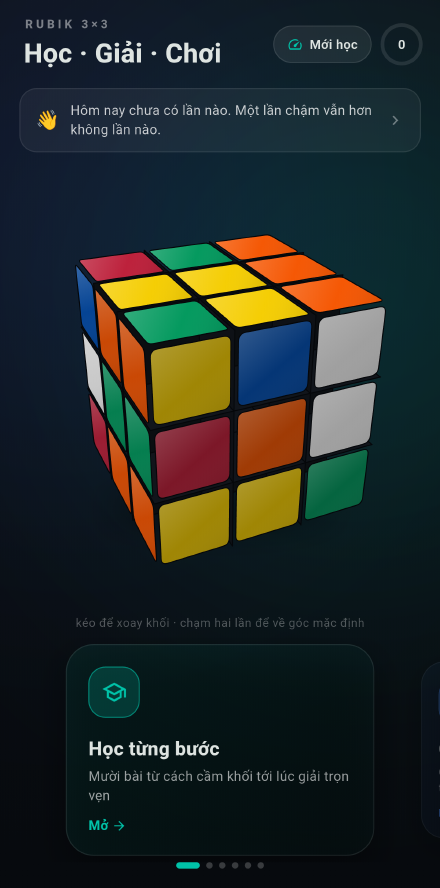
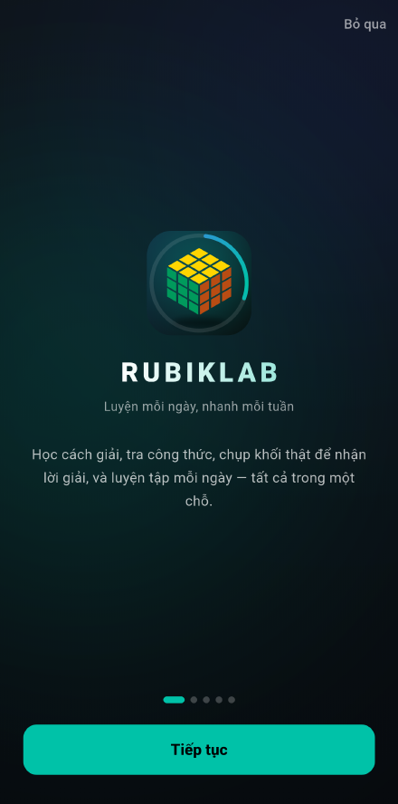
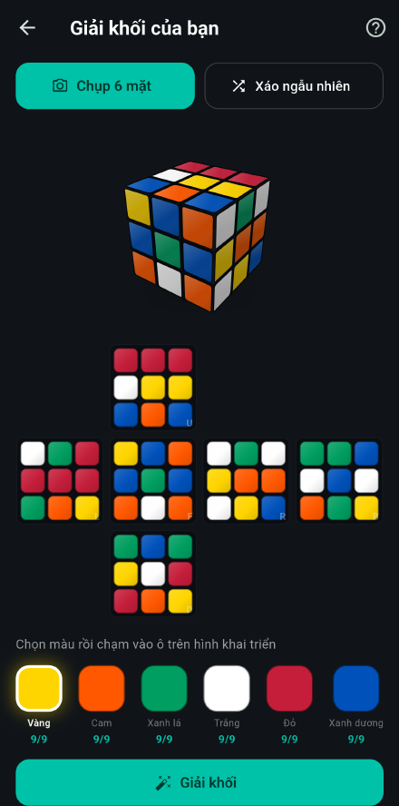
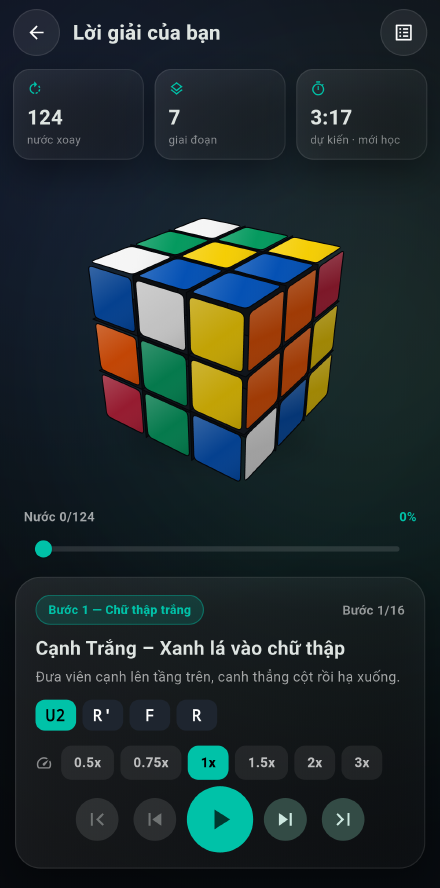
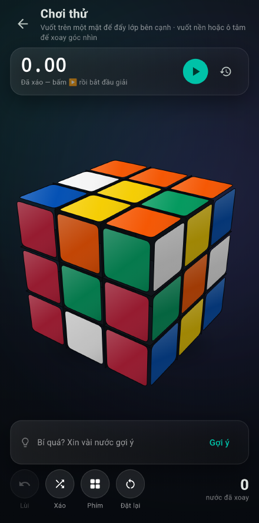
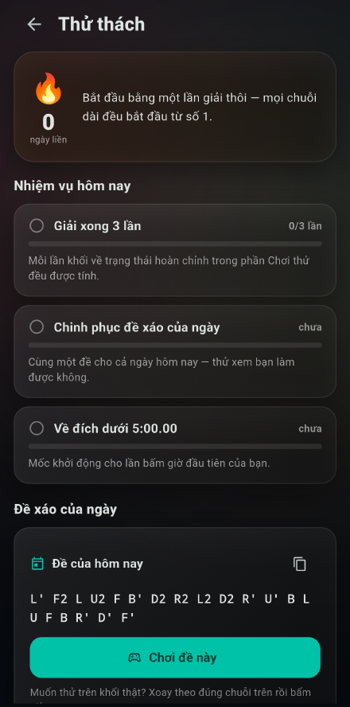

Học, giải và luyện Rubik 3×3
Mười bài học có minh hoạ 3D, chụp khối thật để nhận lời giải từng nước, khối ảo chơi ngay trên máy và đồng hồ bấm giờ. Luyện mỗi ngày, nhanh mỗi tuần.

Bốn thứ RubikLab làm tốt
Không phải một app hướng dẫn đọc chay — mọi công thức đều xem chạy được trên khối 3D ngay tại chỗ.
Học từng bước, có hình động
Mười một bài từ cách cầm khối tới lúc giải trọn vẹn, kèm bài tháo lắp và vệ sinh khối. Mỗi công thức bấm "Xem" là khối 3D chạy thử ngay, chỉnh chậm lại 0.5× nếu tay chưa quen.
Chụp khối thật, nhận lời giải
Chụp sáu mặt hoặc tô màu bằng tay. App tự tìm mặt khối trong ảnh nên đọc màu chính xác kể cả khi khối đặt lệch, chỉ đích danh ô đọc sai và gợi ý cách sửa, rồi trả lời giải kèm số nước và thời gian dự kiến. Khung ngắm còn tự bám khối và tự bấm chụp giúp bạn. Khối nào dán nhãn ở viên tâm cũng không sao — màu của mặt được suy ra từ tám ô còn lại chứ không phụ thuộc vào ô tâm.
Khối ảo, bấm giờ và luyện từng bước
Không có khối thật vẫn chơi được: vuốt thẳng trên mặt khối để đẩy từng lớp. Bấm giờ đúng luật thi đấu, và khi giải trên khối ảo app tự tách thời gian từng giai đoạn để bạn biết mình chậm ở đâu. Muốn tập riêng một bước thì app dựng sẵn thế cho bạn.
Thử thách mỗi ngày
Đề xáo chung cho cả ngày, nhiệm vụ nhỏ, chuỗi ngày liên tiếp và huy hiệu — đủ lý do để quay lại xoay thêm vài lần. App còn nhìn vào mốc thời gian từng giai đoạn để chỉ ra bước nào đang ngốn nhiều thời gian nhất, và nhắc bạn luyện tập vào giờ bạn chọn.
Nhìn thử một vòng
Ảnh chụp thật từ máy Android, không dựng lại.





Có gì bên trong
- 11 bài học tiếng Việt, từ nhập môn tới hoán vị tầng cuối và cách bảo dưỡng khối
- Thư viện công thức tra nhanh, xem minh hoạ 3D tại chỗ
- Bộ giải theo phương pháp tầng lớp, trung bình khoảng 126 nước
- Chia lời giải theo 7 giai đoạn, xem từng nước hoặc chạy liền một mạch
- Chỉnh tốc độ phát từ 0.5× tới 3×, kéo thanh trượt tới bất kỳ nước nào
- Đọc lời giải thành tiếng để vừa xoay vừa nghe, không phải nhìn màn hình
- Ước tính thời gian hoàn thành theo ba mức trình độ
- Lưu lại khối đã nhập và mở ra giải tiếp lúc khác
- Nhập tay nhanh: con trỏ tự nhảy ô, chỉ việc bấm màu theo thứ tự đọc
- Chọn lời giải học được (~126 nước) hay lời giải ngắn nhất (~23 nước)
- Mười tám thế đẹp chia ba nhóm: bàn cờ, khối trong khối, siêu lật, bộ ba rắn, Tetris…
- Ba trò rèn phản xạ: nhận diện thế, nhớ công thức, đoán trạng thái
- Tự giữ bản nháp, lỡ thoát giữa chừng không phải nhập lại 54 ô
- Khung ngắm tự bám khối và tự chụp khi bạn giữ yên
- Tự tìm mặt khối trong ảnh, chịu được khối lệch tâm và hơi nghiêng
- Một ô tâm đọc sai không còn làm hỏng cả khối — màu mặt được suy ra bằng loại trừ
- Đọc được cả khối phủ carbon, loại chỉ còn màu ở viền quanh mép mỗi ô
- Bỏ qua nhãn dán giữa ô tâm và đốm sáng phản chiếu khi đọc màu
- Đánh dấu ô chưa chắc và cho chụp lại riêng một mặt
- Báo lỗi chỉ rõ viên nào sai, ô màu nào, phải quay về hướng nào
- Khối ảo xoay được ba cách: vuốt, chạm ô chọn mũi tên, hoặc bấm nút ký hiệu
- Đảo chiều vuốt được nếu bạn thấy ngược so với khối thật
- Gợi ý nước tiếp theo và hoàn tác trên khối ảo
- Luyện riêng từng bước với thế do app dựng sẵn
- Tự tách thời gian từng giai đoạn khi giải trên khối ảo
- Chỉ ra bước đang ngốn nhiều thời gian nhất và mở thẳng bài tập cho bước đó
- Nhắc luyện tập hằng ngày vào giờ bạn chọn
- Thẻ ghi nhớ công thức, thẻ hay quên hiện lại nhiều hơn
- Sao lưu và khôi phục toàn bộ tiến độ ra tệp
- Đồng bộ nhiều thiết bị qua dự án Supabase của riêng bạn (tuỳ chọn)
- Chia sẻ cấu hình sang máy mới bằng mã QR có mã PIN
- Bấm giờ đúng luật thi đấu: 15 giây quan sát, phạt +2 và DNF, ao5 và ao12
- Tách bảng thành tích theo kiểu giải: hai tay, một tay, nhắm mắt, bằng chân
- Màn hình thống kê: đường diễn biến, phân bố thời gian, thời gian từng giai đoạn
- Chia sẻ thành tích thành ảnh để khoe
- Sáu mẫu khối dựng sẵn, hoặc quét màu từ ảnh khối thật của bạn
- Tự báo khi có bản mới, tải dưới nền rồi cài ngay trong app
Cài đặt trong bốn bước
RubikLab đang phát hành dưới dạng APK để chạy thử và beta, chưa lên Google Play.
- Tải tệp APKBấm nút tải ở đầu trang. Tệp khoảng 27 MB.
- Mở tệp vừa tảiVào phần Tải xuống của máy rồi chạm vào tệp
RubikLab-1.8.0.apk. - Cho phép cài từ nguồn nàyAndroid sẽ hỏi một lần. Bật công tắc "Cho phép từ nguồn này" rồi quay lại.
- Mở app và xoay thôiLần đầu mở sẽ có phần giới thiệu nhanh. Bạn có thể bỏ qua bất cứ lúc nào.
Máy Android có thể cảnh báo vì tệp không tải từ Google Play. Đây là chuyện bình thường với mọi app phát hành dạng APK. Bạn có thể tự đối chiếu mã băm SHA-256 của tệp ở phần Tải về nếu muốn chắc chắn.
Tải về
Yêu cầu Android 7.0 trở lên — bản 1.4.0 nâng mức tối thiểu để dùng được chức năng nhắc luyện tập. Bản mới sẽ được app tự thông báo.
| Phiên bản | Ngày phát hành | Tệp |
|---|---|---|
| 1.8.0 | — | Tải APK từ GitHub Releases |
Mã băm SHA-256 của tệp được ghi trong phần mô tả của mỗi bản phát hành trên GitHub.
Câu hỏi thường gặp
App có chạy được khi không có mạng không?
Có. Toàn bộ bài học, bộ giải, khối ảo và bấm giờ đều chạy ngay trên máy. Mạng chỉ dùng để kiểm tra và tải bản cập nhật.
Chụp ảnh mà đọc sai màu thì làm sao?
Những ô app không chắc sẽ hiện dấu ?. Nếu trạng thái không hợp lệ, app nói rõ viên nào sai và ở vị trí nào, thường kèm luôn đề xuất kiểu "ô Trước hàng 1 cột 3: cam → đỏ" để bạn bấm áp dụng. Bạn cũng có thể chạm sửa từng ô, hoặc chụp lại riêng một mặt thay vì chụp lại cả sáu.
Khối của tôi có bộ màu khác thì sao?
Được. App đọc màu tương đối theo chính khối bạn chụp chứ không so với một bảng màu cố định, nên khối hệ Nhật, khối stickerless, khối pastel hay khối đã bạc màu đều dùng được. Trong phần "Mẫu khối" còn có thể chụp một tấm để app gợi ý mẫu giống nhất, hoặc dùng luôn đúng màu thật của khối.
Khối tôi phủ carbon, mỗi ô chỉ còn viền màu — có đọc được không?
Được, từ bản 1.4.1. Loại khối này từng làm app bó tay hoàn toàn: chín viền màu dính liền nhau thành một mạng lưới nên app không tách nổi ô nào, và không nhận ra được mặt nào trong sáu mặt. Nay app nhận ra chính cái mạng lưới đó là mặt khối, rồi đọc màu ở giữa bốn cạnh mỗi ô — chỗ chắc chắn còn là viền màu chứ không phải miếng carbon đen.
Khối tôi dán logo to ở viên tâm thì có đọc được không?
Được, kể cả khi nhãn che gần kín ô tâm. Từ bản 1.4.0, app gom màu 48 ô ngoài rìa thành sáu nhóm trước, rồi mới ghép nhóm với mặt — nên màu của một mặt được suy ra từ tám ô còn lại chứ không phụ thuộc vào ô tâm. Trước đây chỉ cần một ô tâm đọc lệch là sai cả khối.
App có nhắc tôi luyện tập không?
Có, nếu bạn tự bật trong Cài đặt → Nhắc luyện tập và chọn giờ. App chỉ xin quyền thông báo đúng lúc bạn bấm bật, không hỏi trước. Không bật thì app không đặt lịch và không xin quyền gì cả.
Lời giải dài quá, có cách nào ngắn hơn không?
Bộ giải dùng phương pháp tầng lớp dành cho người mới nên dài hơn mức tối ưu — đổi lại mỗi nước đều nằm trong một công thức mà bạn học được và nhớ được. Khi đã quen, phần bài học có gợi ý lộ trình học tiếp F2L, OLL và PLL.
Vuốt khó quá, có cách xoay khối nào khác không?
Có ba cách, dùng cách nào cũng được. Vuốt thẳng trên mặt khối là nhanh nhất khi đã quen. Chạm một ô thì hiện bốn mũi tên quanh ô đó, mỗi mũi tên ghi sẵn tên nước đi — chạm mũi tên là xoay, không cần khéo tay và thấy trước lớp nào sắp xoay. Hoặc bấm thẳng dãy nút ký hiệu ngay dưới khối. Nếu bạn thấy vuốt ra chiều ngược với khối thật thì bật "Đảo chiều vuốt" trong Cài đặt.
Vì sao vuốt trên mặt trên lại không xoay mặt trên?
Vuốt trên một mặt sẽ đẩy lớp vuông góc chứa ô bạn vừa chạm, giống hệt khi bạn đặt ngón tay lên khối thật rồi đẩy sang bên. Muốn xoay mặt trên thì vuốt ngang trên một mặt bên. Vuốt vào nền hoặc vào ô tâm sẽ xoay góc nhìn.
Có bản cho iPhone hoặc máy tính không?
Mã nguồn chạy được trên Android, iOS, Windows và web, nhưng hiện chỉ phát hành bản Android. Nếu bạn cần bản khác, cứ gửi mail cho mình.
Đồng bộ nhiều thiết bị hoạt động ra sao?
Bạn tạo một dự án Supabase miễn phí của riêng mình, chạy tệp SQL kèm theo app để dựng bảng, rồi nhập địa chỉ và khoá vào phần Cài đặt → Đồng bộ. Máy thứ hai chỉ cần quét mã QR từ máy thứ nhất. Dữ liệu đi thẳng vào dự án của bạn, không qua máy chủ nào của RubikLab.
Dùng hai máy song song có mất dữ liệu không?
Không. Lịch sử bấm giờ chỉ thêm chứ không sửa, nên khi hai máy gặp nhau thì kết quả là hợp của cả hai — không lần nào bị ghi đè. Bài học đã xong và ngày thử thách cũng gộp lại tương tự. Chỉ những lựa chọn đơn lẻ như trình độ hay mẫu khối mới lấy theo bên được sửa gần đây hơn.
Không muốn đồng bộ thì sao?
Thì không cần làm gì cả. Mặc định app chạy hoàn toàn ngoại tuyến và không có dữ liệu nào rời khỏi máy. Muốn giữ tiến độ khi đổi máy mà không cần tài khoản thì dùng chức năng xuất tệp sao lưu trong phần Cài đặt.
Cập nhật thế nào?
Khi có bản mới, app hiện thông báo ngay ở màn hình chính, tải tệp dưới nền rồi mở trình cài đặt cho bạn xác nhận. Bạn cũng có thể chạm vào dòng phiên bản ở cuối màn hình chính để tự kiểm tra.
Quyền riêng tư
Nói ngắn gọn: mặc định RubikLab không gửi gì của bạn đi đâu. Đồng bộ nhiều thiết bị là tuỳ chọn, và chỉ khi bạn tự bật thì mới có dữ liệu rời khỏi máy.
Khi bạn không bật đồng bộ
Không cần tài khoản, không đăng nhập, không quảng cáo, không công cụ theo dõi. Tiến độ học, lịch sử bấm giờ và mẫu khối chỉ nằm trên máy bạn; gỡ app là mất hết, không có bản sao nào ở nơi khác. Muốn giữ lại thì tự xuất một tệp sao lưu trong phần Cài đặt — tệp đó đi đâu là do bạn.
Ảnh chụp khối
Ảnh chỉ được xử lý ngay trên máy để đọc màu, không gửi đi đâu, không lưu vào thư viện ảnh và bị bỏ ngay sau khi đọc xong. Điều này đúng kể cả khi bạn đã bật đồng bộ.
Khi bạn tự bật đồng bộ
Từ bản 1.3.0, bạn có thể kết nối một dự án Supabase của riêng bạn để dùng chung tiến độ trên nhiều máy. Lúc đó lịch sử bấm giờ, tiến độ học và lựa chọn mẫu khối sẽ được gửi lên đúng dự án đó — nơi bạn sở hữu và kiểm soát, không phải máy chủ của chúng tôi. Không có máy chủ nào của RubikLab nhận dữ liệu của bạn cả.
Tắt lúc nào cũng được
Đăng xuất hoặc ngắt kết nối là app quay lại chạy hoàn toàn ngoại tuyến, và mọi thứ trên máy vẫn còn nguyên. Muốn xoá hẳn dữ liệu trên máy chủ thì xoá trực tiếp trong dự án Supabase của bạn.
App xin những quyền nào và để làm gì
| Quyền | Dùng để làm gì |
|---|---|
| Máy ảnh | Chụp sáu mặt khối để đọc màu. Chỉ hỏi khi bạn bấm nút chụp, và từ chối vẫn dùng được app bằng cách nhập màu tay. |
| Internet | Kiểm tra và tải bản cập nhật. Nếu bạn tự bật đồng bộ thì còn dùng để gửi nhận dữ liệu với đúng dự án Supabase mà bạn đã kết nối. |
| Cài đặt ứng dụng | Mở trình cài đặt của hệ thống với bản cập nhật vừa tải. Android không cho cài ngầm — bạn vẫn là người bấm đồng ý. |
| Thông báo | Nhắc luyện tập hằng ngày. Chỉ hỏi đúng lúc bạn tự bật chức năng này trong Cài đặt; không bật thì app không xin và không đặt lịch nhắc. |
| Không có quyền nào cho phần chẩn đoán | Tuỳ chọn "Giúp cải thiện nhận diện ảnh" chỉ ghi vào thư mục riêng của app, không cần quyền gì thêm và không gửi dữ liệu đi đâu. Mặc định tắt, xoá được bất cứ lúc nào. |
| Chạy sau khi khởi động máy | Đặt lại lịch nhắc sau khi bạn khởi động lại điện thoại. Không có quyền này thì khởi động lại một lần là lời nhắc im luôn. App không chạy nền để làm gì khác. |
RubikLab cố tình không xin quyền báo thức chính xác: lời nhắc lệch vài phút không ảnh hưởng gì, mà quyền đó buộc bạn phải vào tận phần cài đặt hệ thống để cấp.
Giấy phép
Ứng dụng RubikLab
Miễn phí sử dụng cho mục đích cá nhân và học tập. Bản quyền © 2026 mittohoa. Vui lòng không phát tán lại tệp cài đặt đã chỉnh sửa dưới tên RubikLab. Mã nguồn app hiện để riêng tư.
Trang giới thiệu này
Mã nguồn của chính trang web này được phát hành theo giấy phép MIT, bạn có thể xem và dùng lại thoải mái.
Thư viện mã nguồn mở đã dùng
| Thư viện | Vai trò | Giấy phép |
|---|---|---|
| Flutter & Dart | Nền tảng dựng app | BSD-3-Clause |
| camera | Chụp sáu mặt khối | BSD-3-Clause |
| image | Giải mã ảnh và lấy mẫu màu | MIT |
| shared_preferences | Lưu tiến độ trên máy | BSD-3-Clause |
| http | Kiểm tra và tải bản cập nhật | BSD-3-Clause |
| package_info_plus | Đọc phiên bản đang chạy | BSD-3-Clause |
| path_provider | Chỗ lưu tệp cập nhật | BSD-3-Clause |
Liên hệ
Gặp lỗi, thấy lời giải sai, hay muốn thêm tính năng? Cứ viết cho mình một dòng.